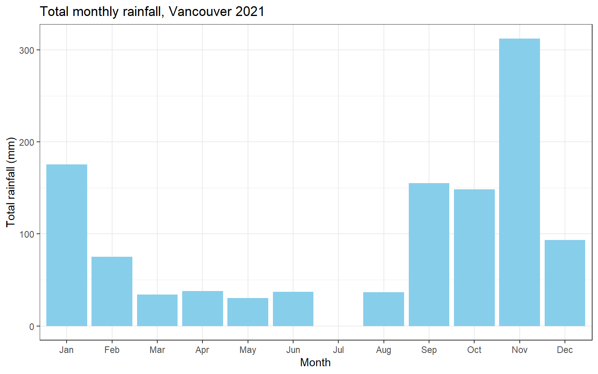
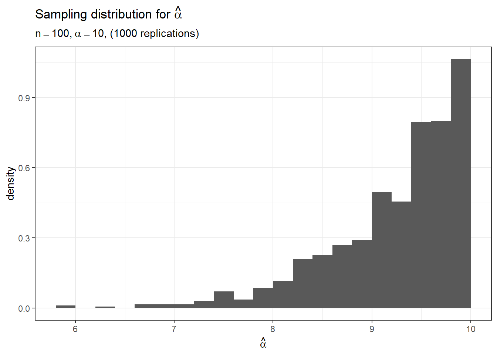
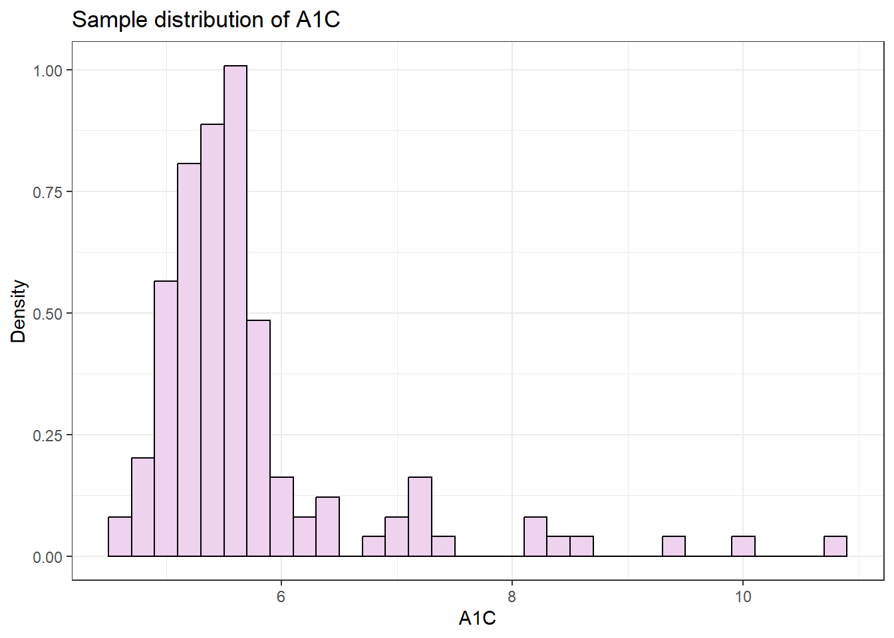
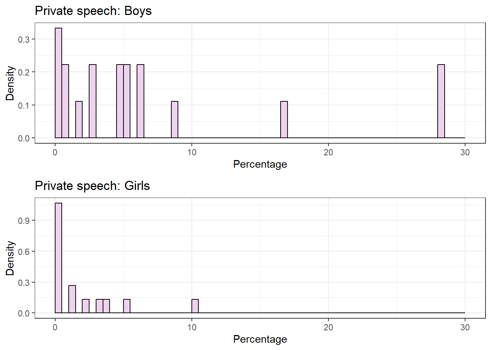

STA238: Probability, Statistics and Data Analysis II
Course Description
An introduction to statistical inference and practice. Statistical models and parameters, estimators of parameters and their statistical properties, methods of estimation, confidence intervals, hypothesis testing, likelihood function, the linear model. Use of statistical computation for data analysis and simulation.
Course material provided by Professor Karen Huynh Wong and modifications were made by myself.
Lab 0
In this R Lab, you will be guided by your TA to familiarize yourself with the R environment, using and formatting in R Markdown, and producing well-organized outputs.
R Lab Learning Goals
- Install and load packages in R, use them in an R Markdown file
- Simple computations and referring to
?command_nameto find the documentation of various commands - Select elements, columns, or rows from a dataset
- Produce simple plots in ggplot with informative and clearly formatted titles + labels
- Use LaTeX notation to neatly and correctly display math notation. You can knit this document as you type (which also helps you identify bugs in your code!) to see how the format of the text translates into the finished product, such as creating headers, bold-facing, and math notation!
- Knit your document to a finished document that includes written text and properly rendered math notation, with plots and source code separately embedded
Some additional resources you may find helpful as you learn is the R Markdown Cheatsheet and the LaTeX Cheatsheet. As you work more in LaTeX, the notation will get easier and become second nature!
1. Install and Load Packages
R packages are a collection of functions, code, and data sets that are developed by others and can be used to supplement the basic tools in R. R comes with some basic packages, but working with them can be sometimes clunky. You’ll begin by learning how to install packages and load packages, and the difference between these two actions!
Begin by installing and loading the tidyverse package,
which is a collection of R packages. We will use this extensively in our
course, as all packages within share similar structure and design,
making it a very intuitive and versatile tool to master!
Note: Never include a package install in your R chunks in an R Markdown file. R will not be able to knit your document! Instead, run it strictly within your console.
# Students: What do you think the 'message = F' in the R chunk option does?
# Try knitting your document with and without the option
# Can also try `warning = F` to hide warnings
# echo = F` to run the chunk but hide the code
# install.packages("tidyverse")
library(tidyverse)
# Use Ctrl + Alt + I shortcut for creating code chunks2. Loading Data and Saving it to an Object
Let’s examine some datasets that are already available in R (see
library(help = "datasets") for a list of datasets in base
R), starting with the ToothGrowth dataset.
# ?ToothGrowth
# Variable Assignment
dat <- ToothGrowth
# Mostly useful for smaller datasets, but for larger ones we prefer to use glimpse and summary
# View(dat)
glimpse(dat)## Rows: 60
## Columns: 3
## $ len <dbl> 4.2, 11.5, 7.3, 5.8, 6.4, 10.0, 11.2, 11.2, 5.2, 7.0, 16.5, 16.5, 15.2, 17.3, 22.5, 17.3, 13.6, 14.5, 18.8, 15.5, 23.6, 18.5, 33.9, 25.5, 26.4, 32.5, 26.7, 21.5…
## $ supp <fct> VC, VC, VC, VC, VC, VC, VC, VC, VC, VC, VC, VC, VC, VC, VC, VC, VC, VC, VC, VC, VC, VC, VC, VC, VC, VC, VC, VC, VC, VC, OJ, OJ, OJ, OJ, OJ, OJ, OJ, OJ, OJ, OJ, …
## $ dose <dbl> 0.5, 0.5, 0.5, 0.5, 0.5, 0.5, 0.5, 0.5, 0.5, 0.5, 1.0, 1.0, 1.0, 1.0, 1.0, 1.0, 1.0, 1.0, 1.0, 1.0, 2.0, 2.0, 2.0, 2.0, 2.0, 2.0, 2.0, 2.0, 2.0, 2.0, 0.5, 0.5, …summary(dat)## len supp dose
## Min. : 4.20 OJ:30 Min. :0.500
## 1st Qu.:13.07 VC:30 1st Qu.:0.500
## Median :19.25 Median :1.000
## Mean :18.81 Mean :1.167
## 3rd Qu.:25.27 3rd Qu.:2.000
## Max. :33.90 Max. :2.0003. Simple Data Filtration
It looks like there are two groups of data in the
ToothGrowth data set. What are they?
What if you only want to study the growth based on one source of vitamin C? How do you go about extracting this information?
# After loading and examining your data, and learning about selecting columns or elements
# from your data set, consider the following two commands below.
# Briefly comment below what these two commands do:
# What does
which(dat$supp == 'VC') #do?## [1] 1 2 3 4 5 6 7 8 9 10 11 12 13 14 15 16 17 18 19 20 21 22 23 24 25 26 27 28 29 30# Extracts which indices are TRUE# What does
dat[dat$supp=='VC', 1] #do?## [1] 4.2 11.5 7.3 5.8 6.4 10.0 11.2 11.2 5.2 7.0 16.5 16.5 15.2 17.3 22.5 17.3 13.6 14.5 18.8 15.5 23.6 18.5 33.9 25.5 26.4 32.5 26.7 21.5 23.3 29.5# extracts the `len` variable/column, where `supp` is 'VC'
# Alternative 1
# Pipe operator shortcut: Ctrl + Shift + M
dat %>%
filter(supp == "VC") %>%
select(len)## len
## 1 4.2
## 2 11.5
## 3 7.3
## 4 5.8
## 5 6.4
## 6 10.0
## 7 11.2
## 8 11.2
## 9 5.2
## 10 7.0
## 11 16.5
## 12 16.5
## 13 15.2
## 14 17.3
## 15 22.5
## 16 17.3
## 17 13.6
## 18 14.5
## 19 18.8
## 20 15.5
## 21 23.6
## 22 18.5
## 23 33.9
## 24 25.5
## 25 26.4
## 26 32.5
## 27 26.7
## 28 21.5
## 29 23.3
## 30 29.5# Alternative 2
# This is basically Alternative 1 without the pipe operator
select(filter(dat, supp == "VC"), len)## len
## 1 4.2
## 2 11.5
## 3 7.3
## 4 5.8
## 5 6.4
## 6 10.0
## 7 11.2
## 8 11.2
## 9 5.2
## 10 7.0
## 11 16.5
## 12 16.5
## 13 15.2
## 14 17.3
## 15 22.5
## 16 17.3
## 17 13.6
## 18 14.5
## 19 18.8
## 20 15.5
## 21 23.6
## 22 18.5
## 23 33.9
## 24 25.5
## 25 26.4
## 26 32.5
## 27 26.7
## 28 21.5
## 29 23.3
## 30 29.5# Below we can also extract the other 2 columns
dat[dat$supp=='VC', 2]## [1] VC VC VC VC VC VC VC VC VC VC VC VC VC VC VC VC VC VC VC VC VC VC VC VC VC VC VC VC VC VC
## Levels: OJ VCdat[dat$supp=='VC', 3]## [1] 0.5 0.5 0.5 0.5 0.5 0.5 0.5 0.5 0.5 0.5 1.0 1.0 1.0 1.0 1.0 1.0 1.0 1.0 1.0 1.0 2.0 2.0 2.0 2.0 2.0 2.0 2.0 2.0 2.0 2.04. Formulating a Question
After examining the data set, what are some study questions we can ask? Make some suggestions in the Teams chat!
Below are some questions suggested by students in the chat: * Does dosage and length have a positive correlation? * Which vitamin contributes to the most growth?
5. Calculations in R
Find the (sample) mean and standard deviation of tooth length in the Vitamin C group and again in the group that only received Orange Juice. What can be said based on the numbers computed about the differences between the two groups?
Do this using the formula, instead of the functions
mean() or sd() to practice using R as a
calculator!
# Task for students: try to recreate the mean and variance values through
# Calculations in R, and compare them with the values you should get through
# mean() and sd() commands in R
# Create tooth length variable for the vitamin C
vc <- dat[dat$supp=='VC', 1]
# take the sum of the tooth length, then divide by the number of values
n <- length(vc)
mean.vc <- sum(vc)/n
mean.vc## [1] 16.96333# Can also compute using a for loop
mean.vc2 <- 0
for (i in 1:n){
mean.vc2 <- mean.vc2 + vc[i]/n
}
mean.vc2## [1] 16.96333# Compare to mean() function
mean(vc)## [1] 16.96333# Standard deviation
var.vc <- sum((vc - mean.vc)^2)/(n-1)
sd.vc <- sqrt(var.vc)
sd.vc## [1] 8.266029# Compare to sd() function
sd(vc)## [1] 8.266029Below is a repeat of the above but for OJ (orange
juice):
# Orange Juice
oj <- dat[dat$supp=='OJ', 1]
# Mean
n <- length(oj)
mean.oj <- sum(oj)/n
mean.oj## [1] 20.66333# Can also compute using a for loop
mean.oj2 <- 0
for (i in 1:n){
mean.oj2 <- mean.oj2 + oj[i]/n
}
mean.oj2## [1] 20.66333# Compare to mean()
mean(oj)## [1] 20.66333# Standard deviation
var.oj <- sum((oj - mean.oj)^2)/(n-1)
sd.oj <- sqrt(var.oj)
sd.oj## [1] 6.605561# Compare to sd()
sd(oj)## [1] 6.605561Trying to type the variance formula in plain-text is not visually
appealing, nor helpful in communicating (it’s very difficult to read!).
The beauty of LaTeX is the format is fairly intuitive, such as
$\frac{numerator}{denominator}$ will render as \(\frac{numerator}{denominator}\) (the dollar
signs indicate the start and end of the math setting, double-dollar sign
will have the math rendered centre to the page). For example, the sample
variance can be written as:
\[s^2 = \frac{\sum_{i=1}^n (x_i - \bar{x})^2}{n-1}\] Try to write the sample mean in LaTeX and quote the values computed in the R chunk above!
For the mean we can use
\bar{x}_n = \frac{\sum_{i=1}^n x_i}{n}: \[\bar{x}_n = \frac{\sum_{i=1}^n
x_i}{n}\]
6. Simple Plots
Numerical summaries can be powerful to provide concrete, numerical
evidence to support our claims. Using graphical displays can also
communicate clearly in a visual manner the story that our numbers tell,
and can sometimes be a more powerful communication tool than numbers
because we can see the scale of differences. Let’s use
the ggplot package in tidyverse to produce
side-by-side box plots of how tooth length growth differs between the
two sources of vitamin C:
# Focus of this segment: understanding the layering language of ggplot
# Note also the R chunk options that control the alignment and size of
# The output figures
dat %>%
ggplot(aes(x = supp, y = len)) +
geom_boxplot() + # passing aes(x,y) into here works too!
labs(title = "Guinea Pig Tooth Length Growth by Vitamin C Source",
subtitle = "ToothGrowth Dataset",
x = "Vitamin C Source",
y = "Tooth Length Growth") +
scale_x_discrete(labels = c("Orange Juice", "Ascorbic Acid")) +
theme_bw() # there are many different themes from which to choose!
What can we notice about tooth length growth between the two supplement groups?
Practice using visual and numeric features to:
- Write a conclusion about any perceivable differences between the two sources of vitamin C.
- Provide graphical and numerical features and their interpretations, explaining how they support your claim(s)!
Here are things that we notice:
- The median tooth length growth for the orange juice supplement is
almost at same level as the third quartile of tooth length growth for
ascorbic acid.
- There is some evidence which suggests that median tooth length growth for the orange juice supplement is statistically significantly larger than for the ascorbic acid supplement.
- We can use a t-test to test for the difference in means between two groups. This is just a quick example but make sure to check the assumptions before proceeding!
# Two-sided t-test
t.test(oj,vc)##
## Welch Two Sample t-test
##
## data: oj and vc
## t = 1.9153, df = 55.309, p-value = 0.06063
## alternative hypothesis: true difference in means is not equal to 0
## 95 percent confidence interval:
## -0.1710156 7.5710156
## sample estimates:
## mean of x mean of y
## 20.66333 16.96333# One-sided t-test
t.test(oj,vc,"greater")##
## Welch Two Sample t-test
##
## data: oj and vc
## t = 1.9153, df = 55.309, p-value = 0.03032
## alternative hypothesis: true difference in means is greater than 0
## 95 percent confidence interval:
## 0.4682687 Inf
## sample estimates:
## mean of x mean of y
## 20.66333 16.96333- From the two-sided t-test (p-value = 0.06), there is some evidence to suggest that the difference in tooth length growth between the two supplement groups is statistically significant.
- From the one-sided t-test (p-value = 0.03), there is evidence to suggest that the mean tooth length growth for guinea pigs with orange juice supplements is statistically significantly greater than the mean tooth length growth for guinea pigs with ascorbic acid supplements.
- Note that the p-value for the one-sided t-test is half the p-value for the two-sided t-test.
Lab 1
In this R Lab, you will be guided by the TA to demonstrate the steps involved in performing an exploratory data analysis.
R Lab Learning Goals
- Load data from a local csv file
- Formulate a question for EDA
- Examine and pre-process your data using functions from the
tidyversepackage - Use the
lubridatepackage for manipulating dates - Produce numerical summaries using the
summarizefunction - Produce plots in ggplot to explore your EDA question
# Load Required Packages
library(tidyverse)
library(lubridate)
# Set work directory
setwd("~/GitHub/dang-kevin.github.io/STA238")
# Read in Data
weather <- read.csv("weatherstats_vancouver_daily.csv")
# Using file.choose() allows you to manually select the file you want
# weather <- read.csv(file.choose())
# Quick overview of the data
glimpse(weather)## Rows: 1,000
## Columns: 71
## $ X <int> 1, 2, 3, 4, 5, 6, 7, 8, 9, 10, 11, 12, 13, 14, 15, 16, 17, 18, 19, 20, 21, 22, 23, 24, 25, 26, 27, 28, 29, 30, 31, 32, 33, 34, 35, 36, …
## $ date <chr> "2022-01-16", "2022-01-15", "2022-01-14", "2022-01-13", "2022-01-12", "2022-01-11", "2022-01-10", "2022-01-09", "2022-01-08", "2022-01-…
## $ max_temperature <dbl> 6.3, 7.0, 9.8, 11.1, 11.5, 10.0, 8.5, 6.7, 3.4, 4.6, 3.9, 0.8, 4.9, 5.4, 5.0, 1.4, -2.5, -0.7, -4.1, -4.4, -7.8, -5.7, 0.6, 3.6, 7.0, 8…
## $ avg_hourly_temperature <dbl> 5.29, 5.66, 6.94, 7.56, 9.87, 8.97, 4.78, 2.55, 1.52, 2.64, 0.80, -1.56, 2.12, 3.35, 3.31, -2.01, -6.64, -4.03, -7.09, -8.05, -10.80, -…
## $ avg_temperature <dbl> 5.55, 5.15, 7.45, 7.50, 10.19, 8.35, 3.55, 2.60, 0.64, 2.95, 0.19, -1.29, 2.55, 3.50, 2.75, -4.20, -6.70, -4.39, -7.90, -8.60, -11.55, …
## $ min_temperature <dbl> 4.8, 3.3, 5.1, 3.9, 8.9, 6.7, -1.4, -1.5, -2.1, 1.3, -3.5, -3.4, 0.2, 1.6, 0.5, -9.8, -10.9, -8.1, -11.7, -12.8, -15.3, -10.8, -5.8, 0.…
## $ max_humidex <int> NA, NA, NA, NA, NA, NA, NA, NA, NA, NA, NA, NA, NA, NA, NA, NA, NA, NA, NA, NA, NA, NA, NA, NA, NA, NA, NA, NA, NA, NA, NA, NA, NA, NA,…
## $ min_windchill <int> NA, NA, NA, NA, NA, NA, NA, -2, -5, NA, -7, -10, NA, NA, NA, -13, -17, -14, -18, -20, -23, -16, -13, NA, NA, NA, -10, -7, -5, NA, -6, -…
## $ max_relative_humidity <int> 100, 100, 99, 99, 99, 99, 99, 99, 96, 99, 99, 98, 99, 96, 96, 82, 93, 94, 92, 91, 85, 90, 95, 98, 96, 98, 99, 93, 99, 98, 97, 95, 91, 9…
## $ avg_hourly_relative_humidity <dbl> 99.0, 99.2, 95.7, 94.8, 96.8, 96.3, 93.4, 93.7, 87.3, 77.5, 98.0, 90.9, 90.2, 87.3, 84.6, 71.9, 74.8, 85.0, 69.2, 80.9, 67.9, 72.5, 87.…
## $ avg_relative_humidity <dbl> NA, 99.0, 93.0, 93.0, 94.5, 95.5, 91.5, 91.5, 79.0, 78.5, 98.0, NA, 85.0, 84.5, 82.0, 70.5, 72.5, 80.0, 70.0, 79.0, 71.0, 72.5, 84.0, 9…
## $ min_relative_humidity <int> 97, 98, 87, 87, 90, 92, 84, 84, 62, 58, 97, 82, 71, 73, 68, 59, 52, 66, 48, 67, 57, 55, 73, 91, 72, 83, 68, 61, 72, 66, 81, 70, 62, 83,…
## $ max_dew_point <dbl> 6.1, 6.5, 7.4, 8.5, 10.2, 9.4, 6.9, 3.6, 2.4, 3.8, 3.9, 0.2, 1.6, 3.1, 2.8, -3.4, -7.3, -4.3, -6.2, -8.9, -10.6, -8.2, -0.4, 2.0, 4.0, …
## $ avg_hourly_dew_point <dbl> 5.1, 5.6, 6.3, 6.7, 9.4, 8.4, 3.8, 1.6, -0.5, -1.1, 0.5, -2.9, 0.6, 1.4, 0.9, -6.5, -10.7, -6.3, -12.1, -10.8, -15.7, -11.9, -4.7, 0.7,…
## $ avg_dew_point <dbl> 5.3, 4.8, 6.3, 6.2, 9.2, 8.1, 3.4, 1.6, -1.0, -0.6, 0.5, -2.2, 0.5, 1.2, 0.4, -6.2, -10.1, -7.1, -11.1, -11.6, -15.0, -11.9, -4.5, 1.0,…
## $ min_dew_point <dbl> 4.6, 3.1, 5.3, 4.0, 8.2, 6.8, -0.1, -0.5, -4.5, -5.1, -2.9, -4.6, -0.6, -0.6, -1.9, -9.1, -12.8, -9.9, -16.0, -14.3, -19.4, -15.6, -8.5…
## $ max_wind_speed <int> 11, 13, 14, 16, 23, 28, 28, 15, 24, 61, 26, 23, 31, 36, 44, 36, 18, 25, 23, 17, 21, 19, 32, 26, 31, 32, 20, 15, 24, 35, 27, 36, 26, 22,…
## $ avg_hourly_wind_speed <dbl> 4.96, 6.21, 7.67, 8.58, 15.88, 20.58, 15.42, 7.08, 14.21, 34.17, 16.83, 13.12, 16.38, 22.42, 30.17, 19.33, 9.96, 12.38, 14.17, 9.12, 15…
## $ avg_wind_speed <dbl> 6.0, 8.0, 8.0, 9.0, 14.5, 21.0, 15.0, 8.0, 14.5, 34.0, 15.0, 15.0, 16.5, 23.0, 32.5, 24.0, 9.5, 15.0, 14.0, 10.0, 12.5, 15.5, 22.0, 15.…
## $ min_wind_speed <int> 1, 3, 2, 2, 6, 14, 2, 1, 5, 7, 4, 7, 2, 10, 21, 12, 1, 5, 5, 3, 4, 12, 12, 4, 8, 9, 1, 1, 1, 4, 6, 1, 2, 6, 4, 7, 7, 1, 3, 2, 3, 1, 3, …
## $ max_wind_gust <int> NA, NA, NA, NA, 38, 41, 38, NA, 32, 83, 38, NA, 46, 62, 68, 49, NA, 32, 32, NA, NA, NA, 42, 39, 46, 46, NA, NA, 31, 46, 31, 47, 47, 38,…
## $ wind_gust_dir_10s <int> NA, NA, NA, NA, 9, 10, 7, NA, 7, 29, 10, NA, 20, 20, 14, 9, NA, 7, 6, NA, NA, NA, 9, 10, 26, 14, NA, NA, 31, 20, 9, 29, 7, 9, 8, 16, 16…
## $ max_pressure_sea <dbl> 102.76, 102.90, 103.29, 103.06, 101.97, 102.24, 102.69, 102.79, 102.71, 101.45, 101.05, 102.52, 101.75, 100.67, 101.16, 102.51, 102.41,…
## $ avg_hourly_pressure_sea <dbl> 102.34, 102.82, 103.10, 102.30, 101.77, 101.94, 102.49, 102.65, 102.25, 99.95, 100.12, 102.08, 101.31, 99.77, 100.39, 102.10, 101.90, 1…
## $ avg_pressure_sea <dbl> 102.35, 102.81, 103.06, 102.37, 101.81, 101.95, 102.38, 102.67, 102.12, 100.22, 100.04, 101.87, 101.25, 99.99, 100.27, 101.81, 101.78, …
## $ min_pressure_sea <dbl> 101.94, 102.71, 102.83, 101.68, 101.64, 101.66, 102.06, 102.54, 101.53, 99.00, 99.03, 101.22, 100.75, 99.32, 99.37, 101.11, 101.14, 100…
## $ max_pressure_station <dbl> 102.71, 102.85, 103.24, 103.01, 101.92, 102.19, 102.64, 102.74, 102.66, 101.40, 101.00, 102.47, 101.70, 100.62, 101.11, 102.46, 102.36,…
## $ avg_hourly_pressure_station <dbl> 102.29, 102.77, 103.05, 102.25, 101.72, 101.89, 102.44, 102.60, 102.20, 99.90, 100.07, 102.03, 101.26, 99.72, 100.34, 102.05, 101.85, 1…
## $ avg_pressure_station <dbl> 102.30, 102.76, 103.01, 102.32, 101.75, 101.90, 102.33, 102.61, 102.07, 100.17, 99.99, 101.82, 101.20, 99.94, 100.22, 101.76, 101.72, 1…
## $ min_pressure_station <dbl> 101.89, 102.66, 102.78, 101.63, 101.59, 101.61, 102.01, 102.49, 101.48, 98.95, 98.98, 101.17, 100.70, 99.27, 99.32, 101.06, 101.09, 100…
## $ max_visibility <int> 16100, 24100, 48300, 48300, 32200, 32200, 32200, 40200, 48300, 48300, 24100, 32200, 40200, 32200, 48300, 48300, 48300, 40200, 40200, 40…
## $ avg_hourly_visibility <dbl> 6950.0, 10870.8, 31570.8, 34525.0, 17116.7, 24008.3, 24812.5, 30837.5, 23845.8, 36287.5, 10545.8, 19091.7, 19437.5, 29579.2, 26158.3, 3…
## $ avg_visibility <int> 8350, 12150, 33800, 36200, 19300, 18500, 22550, 20600, 26150, 28200, 12350, 16400, 22500, 20950, 26550, 36200, 36200, 20500, 20300, 321…
## $ min_visibility <int> 600, 200, 19300, 24100, 6400, 4800, 12900, 1000, 4000, 8100, 600, 600, 4800, 9700, 4800, 24100, 24100, 800, 400, 24100, 4800, 2400, 120…
## $ max_health_index <dbl> 2.0, 2.2, 1.8, 2.3, 2.4, 2.3, 2.8, 3.0, 2.9, 2.8, 2.5, 3.2, 2.9, 2.5, 2.4, 3.2, 4.1, 3.6, 3.4, 3.9, 2.8, 2.4, 2.3, 2.3, 2.9, 2.4, 3.8, …
## $ avg_hourly_health_index <dbl> 1.3, 1.5, 1.3, 1.7, 1.7, 1.8, 2.1, 2.0, 2.2, 2.2, 2.1, 2.2, 2.2, 2.2, 2.0, 2.3, 2.6, 2.5, 2.6, 2.6, 2.3, 2.0, 1.9, 1.9, 2.2, 1.9, 2.5, …
## $ avg_health_index <dbl> 1.5, 1.6, 1.4, 1.6, 1.8, 1.8, 2.2, 2.2, 2.2, 2.2, 2.1, 2.5, 2.4, 2.2, 2.0, 2.1, 3.1, 2.7, 2.7, 3.0, 2.4, 2.1, 2.0, 2.0, 2.3, 1.8, 2.8, …
## $ min_health_index <dbl> 1.0, 1.0, 1.0, 1.0, 1.2, 1.3, 1.7, 1.5, 1.6, 1.6, 1.8, 1.7, 1.8, 1.9, 1.7, 1.0, 2.1, 1.8, 2.0, 2.0, 2.0, 1.8, 1.7, 1.6, 1.7, 1.2, 1.7, …
## $ heatdegdays <dbl> 12.4, 12.8, 10.6, 10.5, 7.8, 9.7, 14.4, 15.4, 17.4, 15.1, 17.8, 19.3, 15.4, 14.5, 15.2, 22.2, 24.7, 22.4, 25.9, 26.6, 29.6, 26.2, 20.6,…
## $ cooldegdays <dbl> 0, 0, 0, 0, 0, 0, 0, 0, 0, 0, 0, 0, 0, 0, 0, 0, 0, 0, 0, 0, 0, 0, 0, 0, 0, 0, 0, 0, 0, 0, 0, 0, 0, 0, 0, 0, 0, 0, 0, 0, 0, 0, 0, 0, 0, …
## $ growdegdays_5 <dbl> 0.6, 0.2, 2.5, 2.5, 5.2, 3.4, 0.0, 0.0, 0.0, 0.0, 0.0, 0.0, 0.0, 0.0, 0.0, 0.0, 0.0, 0.0, 0.0, 0.0, 0.0, 0.0, 0.0, 0.0, 0.0, 0.0, 0.0, …
## $ growdegdays_7 <dbl> 0.0, 0.0, 0.4, 0.5, 3.2, 1.4, 0.0, 0.0, 0.0, 0.0, 0.0, 0.0, 0.0, 0.0, 0.0, 0.0, 0.0, 0.0, 0.0, 0.0, 0.0, 0.0, 0.0, 0.0, 0.0, 0.0, 0.0, …
## $ growdegdays_10 <dbl> 0.0, 0.0, 0.0, 0.0, 0.2, 0.0, 0.0, 0.0, 0.0, 0.0, 0.0, 0.0, 0.0, 0.0, 0.0, 0.0, 0.0, 0.0, 0.0, 0.0, 0.0, 0.0, 0.0, 0.0, 0.0, 0.0, 0.0, …
## $ precipitation <dbl> 0.0, 0.2, 0.0, 0.2, 29.3, 17.7, 4.6, 0.0, 3.0, 7.6, 16.4, 0.9, 7.0, 7.6, 8.6, 0.0, 0.0, 4.7, 0.0, 0.0, 0.8, 3.0, 1.6, 8.7, 2.4, 3.4, 6.…
## $ rain <dbl> NA, 0.2, 0.0, 0.2, 29.3, 17.7, 4.6, 0.0, 3.0, 7.6, 6.8, NA, 5.6, 7.6, 4.9, 0.0, 0.0, NA, 0.0, 0.0, 0.0, 0.0, 0.0, 5.1, 2.4, 3.4, 6.5, 0…
## $ snow <dbl> NA, 0.0, 0.0, 0.0, 0.0, 0.0, 0.0, 0.0, 0.0, 0.0, 12.0, NA, 0.4, 0.0, 3.7, 0.0, 0.0, 2.0, 0.2, 0.0, 1.0, 4.0, 2.2, 6.9, 0.0, 0.0, 0.0, 0…
## $ snow_on_ground <int> NA, NA, NA, NA, NA, NA, NA, NA, NA, 2, 12, 0, 0, 2, 7, NA, NA, 16, 3, 1, 1, 2, 0, 1, NA, NA, NA, NA, NA, NA, NA, NA, NA, NA, NA, NA, NA…
## $ sunrise <chr> "08:01:00", "08:02:00", "08:03:00", "08:04:00", "08:04:00", "08:05:00", "08:05:00", "08:06:00", "08:06:00", "08:07:00", "08:07:00", "08…
## $ sunset <chr> "16:43:00", "16:42:00", "16:40:00", "16:39:00", "16:38:00", "16:36:00", "16:35:00", "16:34:00", "16:32:00", "16:31:00", "16:30:00", "16…
## $ daylight <dbl> 8.70, 8.67, 8.62, 8.58, 8.57, 8.52, 8.50, 8.47, 8.43, 8.40, 8.38, 8.37, 8.35, 8.32, 8.30, 8.28, 8.27, 8.25, 8.23, 8.23, 8.22, 8.22, 8.2…
## $ sunrise_f <dbl> 8.02, 8.03, 8.05, 8.07, 8.07, 8.08, 8.08, 8.10, 8.10, 8.12, 8.12, 8.12, 8.12, 8.13, 8.13, 8.13, 8.13, 8.13, 8.13, 8.12, 8.12, 8.12, 8.1…
## $ sunset_f <dbl> 16.72, 16.70, 16.67, 16.65, 16.63, 16.60, 16.58, 16.57, 16.53, 16.52, 16.50, 16.48, 16.47, 16.45, 16.43, 16.42, 16.40, 16.38, 16.37, 16…
## $ min_uv_forecast <int> 1, NA, 1, 1, NA, NA, NA, 1, NA, 1, NA, NA, NA, NA, NA, NA, 1, 1, 1, 1, 1, NA, NA, NA, NA, NA, NA, 1, 1, NA, NA, NA, NA, NA, NA, NA, NA,…
## $ max_uv_forecast <int> 1, NA, 1, 1, NA, NA, NA, 1, NA, 1, NA, NA, NA, NA, NA, NA, 1, 1, 1, 1, 1, NA, NA, NA, NA, NA, NA, 1, 1, NA, NA, NA, NA, NA, NA, NA, NA,…
## $ min_high_temperature_forecast <int> 7, 7, 9, 9, 10, 10, 8, 6, 2, 3, 3, 2, 3, 2, 5, -1, -3, -1, -6, -5, -9, -4, 0, 3, 4, 8, 1, 1, 5, 6, 2, 5, 6, 3, 3, 4, 6, 6, 5, 7, 6, 3, …
## $ max_high_temperature_forecast <int> 7, 8, 9, 10, 10, 10, 8, 6, 3, 3, 3, 2, 4, 4, 5, -1, -2, -1, -5, -4, -8, -4, 1, 3, 5, 8, 1, 1, 5, 6, 3, 6, 6, 5, 5, 5, 6, 6, 5, 7, 6, 3,…
## $ min_low_temperature_forecast <int> 4, 5, 6, 6, 9, 6, 7, 0, 2, -1, 4, -2, -2, 1, 3, 0, -9, -8, -8, -10, -9, -11, -6, -1, 0, 2, 2, -5, -3, 3, 1, -2, 2, 2, 1, 2, 1, 6, 1, 1,…
## $ max_low_temperature_forecast <int> 4, 5, 6, 6, 9, 9, 8, 0, 4, -1, 4, 0, -2, 1, 3, 0, -7, -7, -4, -10, -7, -10, -6, 0, 1, 3, 2, -4, -3, 3, 1, 1, 3, 2, 1, 2, 1, 6, 1, 2, 6,…
## $ solar_radiation <lgl> NA, NA, NA, NA, NA, NA, NA, NA, NA, NA, NA, NA, NA, NA, NA, NA, NA, NA, NA, NA, NA, NA, NA, NA, NA, NA, NA, NA, NA, NA, NA, NA, NA, NA,…
## $ max_cloud_cover_4 <lgl> NA, NA, NA, NA, NA, NA, NA, NA, NA, NA, NA, NA, NA, NA, NA, NA, NA, NA, NA, NA, NA, NA, NA, NA, NA, NA, NA, NA, NA, NA, NA, NA, NA, NA,…
## $ avg_hourly_cloud_cover_4 <lgl> NA, NA, NA, NA, NA, NA, NA, NA, NA, NA, NA, NA, NA, NA, NA, NA, NA, NA, NA, NA, NA, NA, NA, NA, NA, NA, NA, NA, NA, NA, NA, NA, NA, NA,…
## $ avg_cloud_cover_4 <lgl> NA, NA, NA, NA, NA, NA, NA, NA, NA, NA, NA, NA, NA, NA, NA, NA, NA, NA, NA, NA, NA, NA, NA, NA, NA, NA, NA, NA, NA, NA, NA, NA, NA, NA,…
## $ min_cloud_cover_4 <lgl> NA, NA, NA, NA, NA, NA, NA, NA, NA, NA, NA, NA, NA, NA, NA, NA, NA, NA, NA, NA, NA, NA, NA, NA, NA, NA, NA, NA, NA, NA, NA, NA, NA, NA,…
## $ max_cloud_cover_8 <int> 8, 8, 8, 8, 8, 8, 8, 8, 8, 8, 8, 8, 8, 8, 8, 8, 8, 8, 8, 8, 8, 8, 8, 8, 8, 8, 8, 6, 5, 8, 8, 8, 8, 8, 8, 8, 8, 8, 8, 8, 8, 8, 8, 8, 8, …
## $ avg_hourly_cloud_cover_8 <dbl> 6.7, 6.3, 8.0, 6.2, 7.9, 8.0, 6.9, 2.6, 7.6, 6.5, 7.9, 7.3, 7.5, 7.8, 8.0, 7.9, 3.5, 4.6, 4.6, 5.3, 6.1, 6.7, 7.1, 7.5, 7.5, 7.9, 5.7, …
## $ avg_cloud_cover_8 <dbl> 5.0, 4.5, 8.0, 4.5, 7.5, 8.0, 4.0, 4.0, 7.0, 4.5, 6.5, 5.0, 5.5, 7.0, 8.0, 7.0, 4.5, 4.5, 4.0, 4.0, 4.0, 4.5, 5.0, 4.5, 6.0, 7.5, 4.0, …
## $ min_cloud_cover_8 <int> 2, 1, 8, 1, 7, 8, 0, 0, 6, 1, 5, 2, 3, 6, 8, 6, 1, 1, 0, 0, 0, 1, 2, 1, 4, 7, 0, 0, 0, 2, 2, 1, 7, 1, 7, 5, 2, 3, 2, 2, 8, 5, 0, 0, 0, …
## $ max_cloud_cover_10 <lgl> NA, NA, NA, NA, NA, NA, NA, NA, NA, NA, NA, NA, NA, NA, NA, NA, NA, NA, NA, NA, NA, NA, NA, NA, NA, NA, NA, NA, NA, NA, NA, NA, NA, NA,…
## $ avg_hourly_cloud_cover_10 <lgl> NA, NA, NA, NA, NA, NA, NA, NA, NA, NA, NA, NA, NA, NA, NA, NA, NA, NA, NA, NA, NA, NA, NA, NA, NA, NA, NA, NA, NA, NA, NA, NA, NA, NA,…
## $ avg_cloud_cover_10 <lgl> NA, NA, NA, NA, NA, NA, NA, NA, NA, NA, NA, NA, NA, NA, NA, NA, NA, NA, NA, NA, NA, NA, NA, NA, NA, NA, NA, NA, NA, NA, NA, NA, NA, NA,…
## $ min_cloud_cover_10 <lgl> NA, NA, NA, NA, NA, NA, NA, NA, NA, NA, NA, NA, NA, NA, NA, NA, NA, NA, NA, NA, NA, NA, NA, NA, NA, NA, NA, NA, NA, NA, NA, NA, NA, NA,…Note that since this data is from a csv file, functions like
?weather will not provide us with information about the
data set. For the purposes of this lab, we assume that the variable
names are sufficiently informative to intuit their contents. In
practice, however, information about the data and its variables can be
found in a documentation file that is usually available from the source
of the data.
1. Formulating questions for EDA
Our goal during exploratory data analysis (EDA) is to develop an understanding of our data. Real data is complicated, often containing missing data and irregular formatting.
In this lab, we will demonstrate this process with the question: “What is the monthly total rainfall in Vancouver over 2021?”
2. Checking the rain variable
The variable rain contains the daily rainfall measured
in millimeters. Our first task is to check for any missing data. We
could do this using the base R commands from Lab 0, but the code gets
messy for complicated manipulations. Instead, we will use the pipe
operator %>% from the tidyverse package
along with some data processing functions. The pipe operator
%>% allows us to take the output from one function and
“pipe it in” to the argument of the next function. You will find that
data manipulations using the pipe operator are much more readable than
the equivalents in base R!
# Examples of pipe operator
#1. Pulling the first 5 rows of data containing date, rain, and average dew point
# Tidyverse way
weather %>%
select(date, rain, avg_dew_point) %>%
head(5)## date rain avg_dew_point
## 1 2022-01-16 NA 5.3
## 2 2022-01-15 0.2 4.8
## 3 2022-01-14 0.0 6.3
## 4 2022-01-13 0.2 6.2
## 5 2022-01-12 29.3 9.2# base R way
head(weather[c("date", "rain","avg_dew_point")], 5)## date rain avg_dew_point
## 1 2022-01-16 NA 5.3
## 2 2022-01-15 0.2 4.8
## 3 2022-01-14 0.0 6.3
## 4 2022-01-13 0.2 6.2
## 5 2022-01-12 29.3 9.2# head(weather[, c("date", "rain","avg_dew_point")], 5)
#2. Adding new columns of data to the existing weather data:
# Tidyverse way
weather <- weather %>%
mutate(new_variable_1 = 1.5 * avg_hourly_temperature,
new_variable_2 = rain + 10)
# base R way
weather$new_variable_1 <- 1.5 * weather$avg_hourly_temperature
weather$new_variable_2 <- weather$rain + 10First we will check which dates have missing rainfall data:
# Base R way
weather$date[is.na(weather$rain)]## [1] "2022-01-16" "2022-01-05" "2021-12-30" "2020-12-08" "2020-12-07" "2020-12-06" "2020-12-05" "2020-12-04" "2020-12-03" "2020-12-02" "2020-12-01"# Tidyverse way
weather %>%
filter(is.na(rain)) %>%
# can also use select(date)
pull(date)## [1] "2022-01-16" "2022-01-05" "2021-12-30" "2020-12-08" "2020-12-07" "2020-12-06" "2020-12-05" "2020-12-04" "2020-12-03" "2020-12-02" "2020-12-01"# To show the days that DO NOT have missing rain values, add '!' in front of is.na()
# e.g. weather$date[!is.na(weather$rain)]We see that there is one missing value of rainfall in the year 2021. This might be a cause for concern if this was a day with particularly high rainfall. Unfortunately, we do not know if this was the case. The best we can do in these situations is to tell the reader that what is missing from our data so that they are aware of the limitations of our analysis.
3. Formatting the date variable
Since we are concerned with total monthly rainfall, our next task is
to convert the date variable into a form that is amenable
to analysis. First we examine the format date:
# str() compactly displays the structure of an object
# Good alternative to glimpse()
str(weather$date)## chr [1:1000] "2022-01-16" "2022-01-15" "2022-01-14" "2022-01-13" "2022-01-12" "2022-01-11" "2022-01-10" "2022-01-09" "2022-01-08" "2022-01-07" "2022-01-06" "2022-01-05" ...We find that each entry of date is a character vector of
the form “YYYY-MM-DD”. To prepare this data for use in
lubridate, we convert date from a character
vector to a datetime object.
# First we convert date to a datetime object
# To explain format, look at `?strptime`
# The base R way
weather$date <- as.Date(weather$date, format = "%Y-%m-%d")
# The tidyverse way using mutate()
# Make sure to reassign the dataset to ensure that the mutation step is saved
weather <- weather %>%
mutate(date = as.Date(date, format = "%Y-%m-%d"))Now that we have a datetime object, we can use functions from
lubridate to easily convert date into many
useful quantities. We use the functions year,
month, and day to define the corresponding
variables in our data
# Demonstrate some lubridate functions
# Extract weekday as character
weekdays(weather$date) %>% str()## chr [1:1000] "Sunday" "Saturday" "Friday" "Thursday" "Wednesday" "Tuesday" "Monday" "Sunday" "Saturday" "Friday" "Thursday" "Wednesday" "Tuesday" "Monday" "Sunday" ...# Extract month as integer
lubridate::month(weather$date) %>% str()## num [1:1000] 1 1 1 1 1 1 1 1 1 1 ...# Extract month as ordered factor
month(weather$date, label = TRUE) %>% str()## Ord.factor w/ 12 levels "Jan"<"Feb"<"Mar"<..: 1 1 1 1 1 1 1 1 1 1 ...# Extract the year as integer
year(weather$date) %>% str()## num [1:1000] 2022 2022 2022 2022 2022 ...# summarizing the pieces above
# Create the year, month, and day variables
weather <- weather %>%
mutate(year = year(date),
month = month(date, label = TRUE),
day = day(date))4. Filtering and summarizing the data
Now that we have examined and processed our data, we can start to
answer our original question: “What is the monthly total rainfall in
Vancouver over 2021?” To begin, we might use filter and
select to inspect our data
weather %>%
filter(year == 2021) %>%
select(year, month, day, rain) %>%
head(10)## year month day rain
## 1 2021 Dec 31 0.0
## 2 2021 Dec 30 NA
## 3 2021 Dec 29 0.0
## 4 2021 Dec 28 0.0
## 5 2021 Dec 27 0.0
## 6 2021 Dec 26 0.0
## 7 2021 Dec 25 0.0
## 8 2021 Dec 24 5.1
## 9 2021 Dec 23 2.4
## 10 2021 Dec 22 3.4This output, however, is not as helpful as a numerical summary of the
data. The function group_by and summarize
provide a useful method for summarizing the data. First we choose a
variable(s) to group by and then we define the numerical summaries we
wish to compute. For example, we might be interested in the mean and the
maximum rainfall each month.
# Assign to new dataframe to use for plotting
df <- weather %>%
filter(year == 2021) %>%
group_by(month) %>%
summarise(rain_tot = sum(rain, na.rm = T),
rain_max = max(rain, na.rm = T))
df## # A tibble: 12 × 3
## month rain_tot rain_max
## <ord> <dbl> <dbl>
## 1 Jan 176. 29.5
## 2 Feb 75 19.2
## 3 Mar 34 6
## 4 Apr 38 13.5
## 5 May 30.2 8.2
## 6 Jun 37.2 12.5
## 7 Jul 0 0
## 8 Aug 36.7 22.1
## 9 Sep 155 50.9
## 10 Oct 148. 43.3
## 11 Nov 312. 52.5
## 12 Dec 93.5 31.3These numerical summaries may be useful in some contexts, but a graph is generally better for examining these summaries. Thankfully, the results of the summary can easily be piped into ggplot to make such graphs!
df %>%
ggplot(aes(x = month, y = rain_tot)) +
geom_col(fill = "skyblue") +
labs(title = "Total monthly rainfall, Vancouver 2021",
x = "Month",
y = "Total rainfall (mm)") +
# Alternative labelling method instead of labs()
# ggtitle("Total monthly rainfall, Vancouver 2021") +
# xlab("Month") +
# ylab("Total rainfall (mm)") +
theme_bw()
Some quick observations:
- No rainfall in July.
- A lot of rain in November!
Lab 2
In this R Lab, you will be guided by the TA to demonstrate the steps involved in estimator analysis.
R Lab Learning Goals
- Review and implement the inverse CDF method
- Compute a point estimate for an estimator on a sample
- Perform a simulation study to investigate the sampling distribution of an estimator
- Learn about R’s
applyfunctions for looping - Use the package
gridExtraand the functiongrid.arrangeto combine plots, andlatex2expto include relevant details in plot labels
0. Motivation
In our work we often find ourselves simulating data from a
probability distributions. R provides built-in functions to simulate
from the most common distributions (e.g. rnorm,
rbinom, etc. ), but we sometimes need to sample from a
distribution that is not included in base R.
Fortunately, the inverse CDF method provides an all-purpose method for simulating from continuous probability densities, and in the next section we will demonstrate how it can be used to sample from an arbitrary continuous density provided we know the CDF and its inverse.
1. The inverse CDF method
Suppose \(X\) is a continuous random variable with distribution function \(F\). A realization of \(X\) can be simulated as follows:
- Simulate a uniform random variable \(U\sim \text{Uniform(0,1)}\)
- Assign \(X = F^{-1}(U)\)
To demonstrate this method, consider the following unusual density function, \[\begin{equation*} f(x; \alpha) = \begin{cases} \frac{\alpha}{\alpha - 1} \frac{1}{x^2}, & 1 < x \leq \alpha,\\ 0 & \text{otherwise} \end{cases} \end{equation*}\] This density is definitely not included in R, so its a perfect opportunity to use the inverse CDF method!
Mathematical expressions
The first step will be to find the distribution function \(F\). By integration we find that \[\begin{equation*} F(x) = \begin{cases} 0 & x \leq 1 \\ \frac{\alpha}{\alpha - 1}\left(1 - \frac{1}{x}\right) & 1 < x \leq \alpha \\ 1 & \alpha < x. \end{cases} \end{equation*}\] Next we find the inverse CDF by setting \(u = F(x)\), \((u \in [0,1])\), and solving for \(x\): \[\begin{equation*} F^{-1}(u) = \left[1 - \frac{\alpha - 1}{\alpha}u\right]^{-1}, \quad (u \in [0,1]). \end{equation*}\]
Implementing Method
With these expressions we can now program a function
rdens to sample from the linear density \(f\) using the inverse CDF method.
# Define the inverse CDF
F_inv <- function(u, a){
(1-((a-1)/a)*u)^(-1)
}
# Define a function that performs the sampling
rdens <- function(n,a){
u <- runif(n) # u <- runif(n = n, min = 0, max = 1)
x <- F_inv(u, a)
return(x)
}It is important to verify that our function rdens
behaves as expected. To check our function, we’ll plot a few samples of
size \(n = 5000\) from the function to
make sure the density looks correct.
library(tidyverse)
library(latex2exp)
# Plot the result
data.frame(x = rdens(n = 5000, a = 10)) %>%
ggplot(aes(x = x, y = ..density..)) +
geom_histogram(binwidth = 0.2, center = 0.1) +
ggtitle(label = TeX(r'(A sample from $f(x)$)'),
subtitle = TeX(r'($n = 5000, \alpha = 10$)')) +
theme_bw()2. Constructing an Estimator
Now that we can sample from our distribution, we might be interested
in the behaviour of certain estimators. Suppose we wish to estimate the
parameter \(\alpha\) using a sample
from the distribution. Since \(\alpha\)
controls the width of the distribution, we might try estimating it using
the maximum value of our sample. By the expression for the density, we
define our estimator to be \[
\hat \alpha = \max(X_1,...,X_n)
\] It is easy to compute this estimate for each sample we
generate using rdens. All that is needed is to evaluate
max on each sample. For generalizability, we will write a
wrapper function get_ahat.
# Write wrapper function
get_ahat <- function(x){max(x)}
# Evaluate the estimator on a sample
ahat <- get_ahat(rdens(n = 100, a = 10))
cat(ahat)## 9.0586By re-running the above chunk we see that there is substantial variation in the results and the estimates never quite reach the true value of \(10\). Thus it appears that our estimator is biased downwards, however it is not easy to calculate this bias due to the form of the estimator. In these cases, we typically turn to simulation methods to examine the estimator.
3. Bias of the Estimator
In this section, we will construct a simulation study to estimate the bias of the estimator when the sample size is \(n = 100\) and the true value of the parameter is \(\alpha = 10\). To do this, we will simulate 1000 independent samples of size 100 from the density and compute the estimate on each of the samples. From this we will obtain a sample from the sampling distribution of the estimator, which we can then use to estimate the bias and other quantities.
# Simulate 1000 datasets of size 100
sim <- replicate(n = 1000, rdens(n = 100, a = 10))
str(sim)## num [1:100, 1:1000] 6.73 4.05 8.97 1.18 1.22 ...# For each sample (each column), compute the statistic
ahat <- apply(sim, MARGIN = 2, FUN = get_ahat)
str(ahat)## num [1:1000] 8.97 9.85 9.94 9.58 9.81 ...Now that we have a sample of size \(1000\) from the sampling distribution of \(\hat\alpha\), we plot it to learn more about the distribution
# Plot the sampling distribution of the estimator
data.frame(ahat) %>%
ggplot(aes(x = ahat, y = ..density..)) +
geom_histogram(binwidth = 0.2, center = 0.1) +
ggtitle(
label = TeX(r'(Sampling distribution for $\hat{\alpha}$)'),
subtitle = TeX(r'($n = 100, \alpha = 10$, (1000 replications))')) +
xlab(TeX(r'($\hat{\alpha}$)')) +
theme_bw()
From the above sampling distribution, we get a better idea of its sampling variation, bias, as well as any skewness of the distribution which is difficult to determine from numeric summaries alone. To get a more precise estimate of the bias, we simply compute the mean of the sampling distribution and subtract it from the true value \(\alpha = 10\).
# Estimated bias of the estimator
bias <- mean(ahat) - 10
cat(bias)## -0.7583627# 95% credible interval
ci <- quantile(ahat, probs = c(0.025, 0.975))
cat(ci)## 7.556135 9.9759184. Consistency of the Estimator
A natural question once we have an estimator is whether or not it is consistent, that is, as the sample size increases does the estimator converge in probability to the true value. Once again, this is typically difficult to prove analytically, so we might satisfy ourselves by examining the behaviour of the estimator via a simulation study. To do this, we simulate the sampling distribution of the estimator for sample sizes of \(n = 50\), \(100\), \(500\), and \(1000\) and plot the distributions.
# Function for simulations
sim_study <- function(B, n, a){
# Simulate B samples of size n
sim <- replicate(n = B, rdens(n = n, a = a))
ahat <- apply(sim, MARGIN = 2, FUN = get_ahat)
# Compute bias
bias <- mean(ahat) - a
# Plot
fig <- data.frame(ahat) %>%
ggplot(aes(x = ahat, y = ..density..)) +
geom_histogram(binwidth = 0.2, center = 0.1) +
scale_x_continuous(limits = c(5,10)) +
ggtitle(paste0("n =", n)) +
xlab(TeX(r'($\hat{\alpha}$)')) +
theme_bw()
return(list(fig = fig, bias = bias))
}
# Set parameters of simulation study
a <- 10
B <- 1000
n <- c(50, 100, 500, 1000)
# Set seed for reproducibility
set.seed(324)
# Run simulation for each value in n
result <- lapply(n, function(n) sim_study(B = B, n = n, a = a))
names(result) <- paste0("n_", n)# Plot all four plots on a grid using grid.arrange
library(gridExtra)
grid.arrange(result$n_50$fig,
result$n_100$fig,
result$n_500$fig,
result$n_1000$fig)From the above plots, what can you say about the estimator as the sample size increases? Does it appear consistent? Is the bias shrinking? How else does the distribution change?
We can also see our numeric estimates of the bias as follows:
# Print the bias in a data.frame
bias <- lapply(result, function(x) x$bias) %>% as.data.frame()
bias## n_50 n_100 n_500 n_1000
## 1 -1.311561 -0.7815966 -0.1703174 -0.09099329Lab 3
In this R Lab, you will be guided by your TA through a second example of constructing empirical bootstrapped confidence intervals (like we did in class this week). You will also learn how to produce your own Normal QQ plots as a means of verifying normality of data.
R Lab Learning Goals
- Review how to read in data and check for missing values
- Review steps to construct a confidence interval via empirical bootstrapping
- Learn how to produce a normal QQ plot to check for evidence of non-normality (violations in normality)
- Implement empirical bootstrap and construct your own \(95\%\) bootstrap confidence interval
- Interpret the interval constructed
0. Motivation
In this lab we will be considering laboratory values associated with diagnosing Type 2 diabetes, specifically glycated hemoglobin (A1C). Diabetes mellitus is one of the leading causes of death in the United States and estimating population-level prevalence is therefore an area of interest in public health research. This data is a subset of The Nation’s Mobile Health Survey (NHANES) survey for 2017-2018.
1. Formulate a research question
In this presentation we will be considering the following research question:
“What is the average value of A1C in the U.S. population in the period 2017-2018?”
Investigating this question provides us with a crude index for the prevalence of diabetes in the U.S. population.
Since our inferences are based on a small sample from the whole population, we will want to quantify the uncertainty in our estimates due to sampling variation. To this end, we will construct confidence intervals for our estimates using a bootstrap approach.
2. Data preparation
The first task is to load the NHANES data into memory using the
function read.csv.
library(tidyverse)
library(latex2exp)
# Load the Data:
# It may be helpful to manually set your working directory using `setwd`
setwd("~/GitHub/dang-kevin.github.io/STA238")
diabetes <- read.csv("diabetes.csv")
# Get a summary of the variables in the nhanes data
# str(diabetes)
glimpse(diabetes)## Rows: 135
## Columns: 3
## $ seqn <int> 100934, 99455, 99224, 99184, 97031, 98571, 96236, 101113, 95690, 102726, 94994, 101064, 94804, 98358, 95054, 99477, 101612, 100377, 101096, 99024, 94516, 102922…
## $ gh <dbl> 4.8, 5.2, 5.4, 5.6, 5.2, 5.0, 8.3, 5.8, 7.4, 4.9, 4.9, 5.4, 5.4, 5.9, 4.9, 5.6, 5.7, 5.5, 5.8, 5.0, 5.4, NA, 5.1, 5.7, 6.0, NA, 5.1, 5.7, 5.3, 5.6, NA, 5.0, 9.5…
## $ fpg <int> 79, 108, 103, 103, 98, 88, 107, 98, 106, 106, 90, 103, 101, 104, 112, 123, 96, 97, 109, 94, 88, NA, 92, 102, 108, NA, 97, 139, 96, 93, NA, 104, 234, 97, 164, 87…In the above printout, seqn is a subject ID number in
the database, gh is the percentage of glycated hemoglobin
(A1C), and fpg is fasting plasma glucose in mm/dL. The
latter two variables are lab measurements used for diagnosing Type II
diabetes, though our focus in the presentation portion of the lab will
be on the A1C values in gh.
Before we get started on the analysis proper, it is a good idea to account for any missing values in the data.
# Print a summary of `gh` to check for missing data
summary(diabetes)## seqn gh fpg
## Min. : 93732 Min. : 4.600 Min. : 74.0
## 1st Qu.: 96355 1st Qu.: 5.275 1st Qu.: 95.0
## Median : 99289 Median : 5.500 Median :103.0
## Mean : 98779 Mean : 5.791 Mean :111.9
## 3rd Qu.:101137 3rd Qu.: 5.800 3rd Qu.:112.0
## Max. :102935 Max. :10.900 Max. :313.0
## NA's :11 NA's :11We see from the summary printout that there are 11 missing values. For the purposes of this lab we simply note this fact and remove them from the data.
# For this analysis, we remove missing values
# You learned other methods of doing this in R Lab #1
diabetes <- diabetes[complete.cases(diabetes),]
# diabetes <- na.omit(diabetes)3. A point estimate
Recall that our goal is to estimate the mean A1C of the U.S. population from 2017-2018.
The estimate based on our sample is:
# Compute the mean A1C in our sample
x_bar <- mean(diabetes$gh)
x_bar## [1] 5.791129We would, however, like to include a confidence interval for this estimate to reflect the uncertainty in our estimate due to sampling variability. In the next sections we will demonstrate how we will use a bootstrap approach to construct this confidence interval.
4. Bootstrap confidence intervals
The first component of any bootstrap approach is deciding how the bootstrapped datasets will be simulated; will we use a parametric or empirical approach? To help us decide, we should first examine the distribution of our data to see if it resembles a parametric density or not.
# Histogram of `gh`
diabetes %>%
ggplot(aes(x = gh)) +
geom_histogram(aes(y=..density..),
binwidth = 0.2,
fill = 'thistle2',
colour = 'black') +
labs(title = "Sample distribution of A1C",
x = "A1C",
y = "Density")
On inspection, this distribution looks like it is positively-skewed, and that a parametric bootstrap based on a normal sampling distribution is inappropriate. To get a closer look, we can plot the quantiles of the sample against a normal distribution in a Q-Q plot.
# QQ-plot to assess normality of `gh`
diabetes %>%
ggplot(aes(sample = gh)) +
geom_qq() +
geom_qq_line() +
labs(title = "Normal Q-Q plot",
subtitle = "Data: A1C",
x = TeX(r'($N(0,1)$ Quantiles)'),
y = "A1C Quantiles")The Q-Q plot confirms our suspicions that the data in non-normally distributed. Indeed, about 16% of A1C values reside in the heavy tails of the sample. (To see this, note that the points that leave the normal line fall above the \(N(0,1)\) quantile value of \(Z \approx 1\), which corresponds to \(P(Z \geq 1) \approx 0.16\).)
Because of this non-normality, we opt for an empirical bootstrap approach to construct confidence intervals for the mean A1C.
5. Simulation
To construct the confidence intervals, we will used what is called studentized bootstrap confidence intervals. This involves computing the studentized mean \[ t^* = \frac{\bar x_n^* - \bar x_n}{s^*_n/\sqrt n} \] for each bootstrap sample, where \(\bar x_n^*\) and \(s^*_n\) are the bootstrap mean and standard deviation, respectively, and \(\bar x_n\) is the sample mean of the original data. The confidence interval for the population mean \(\mu\) is then \[ \left(\bar x_n - c_u^*\frac{s_n}{\sqrt{n}}, \bar x_n - c_l^*\frac{s_n}{\sqrt{n}}\right), \] where \(c_l^*\) and \(c_u^*\) are the lower and upper critical values of the sampling distribution of \(t^*\) that give the desired significance level. In this lab, we will construct a \(95\%\) confidence interval by taking \(c_l^*\) and \(c_u^*\) to be the \(2.5\%\) and \(97.5\%\) quantiles of the sampling distribution, respectively.
## Using For-Loop
# Define the required inputs:
mean.sample <- mean(diabetes$gh) # sample mean of original data
sd.sample <- sd(diabetes$gh) #sample sd of original data
B <- 2000
n.sample <- length(diabetes$gh)
sim.t <- c() #empty vector to store studentized means
## Bootstrapping Step ##
for (i in 1:B){
boot.sample <- sample(diabetes$gh, n.sample, replace = T)
boot.mean <- mean(boot.sample)
boot.sd <- sd(boot.sample)
# Compute studentized mean and store it into sim.t
sim.t[i] <- (boot.mean-x_bar)/(boot.sd/sqrt(n.sample))
}
## Find the Critical Values ##
(crit.t <- quantile(sim.t, probs = c(0.975, 0.025)))## 97.5% 2.5%
## 1.676319 -2.351053# Compute Bootstrapped CI
(ci.student <- mean.sample - crit.t*sd.sample/sqrt(n.sample))## 97.5% 2.5%
## 5.639214 6.004191Since we know that if we performed this analysis many times on new samples of people, the true population mean A1C would be contained in any interval calculated in the above method in \(95\%\) of replications, this allows us to interpret the calculated interval: We can say that based on our data, we are 95% confident that the average A1C in the population could be as low as 5.6392143 to as high as 6.0041909. (The interpretation of confidence intervals can be tricky!)
Lab 4
In this R Lab, you will be guided by your TA on how to adapt
bootstrapping and simulation to construct confidence intervals and
perform hypothesis tests on two-sample data when normality assumptions
fail. At this point, it is assumed that you will have decent familiarity
in creating histograms using ggplot to assess distribution
shape.
R Lab Learning Goals
- Review: Using
filterindplyr(a package already contained intidyverse) to filter data in dataframe according to some criteria. - Review: Using histograms to gauge normality, and a visual check on equal-variance assumption.
- Use empirical bootstrap to generate confidence intervals for the difference in population means (for simplicity, you will use the percentile method instead of the studentized method).
- Use permutation test to test for equal population means under assumptions of equal variance.
0. Motivation
The data we will be working with today is from a study reported in A Longitudinal Study of the Development of Elementary School Children’s Private Speech. In this study, researchers recorded instances where children were engaged in private speech during a randomly chosen 10 second interval. Private speech refers to speech spoken aloud that is either addressed to oneself or to no particular listener. Many such intervals were observed for each child, and the percentage of intervals where private speech occurred for each child was recorded. One of the outcomes of interest for this study and the focus of our tutorial is the following research question:
Does the amount of private speech differ between boys and girls?
To put this question into a mathematical context, let \((X_1,...X_m)\) and \((Y_1,...,Y_n)\) denote the percentage of private speech observed for boys and girls, respectively. Furthermore, assume that each observation \(X_i\) comes from a population with mean \(\mu_1\) and \(Y_j\) from a population with mean \(\mu_2\). This problem can then be viewed as that of making inferences about differences in means \(\mu_1 - \mu_2\), or determining whether boys and girls have different engagements in private speech.
1. Exploratory data analysis
To begin exploring this question, let us first load in the study data and the relevant libraries for our analysis.
library(tidyverse)
library(latex2exp)
library(gridExtra)
# Load in the speech data
# Remember to set your working directory and ensure data files are stored
# in the same location
setwd("~/GitHub/dang-kevin.github.io/STA238")
speech <- read.csv("speech.csv")
glimpse(speech)## Rows: 33
## Columns: 3
## $ X <int> 1, 2, 3, 4, 5, 6, 7, 8, 9, 10, 11, 12, 13, 14, 15, 16, 17, 18, 19, 20, 21, 22, 23, 24, 25, 26, 27, 28, 29, 30, 31, 32, 33
## $ gender <chr> "male", "male", "male", "male", "male", "male", "male", "male", "male", "male", "male", "male", "male", "male", "male", "male", "male", "male", "female", …
## $ percentage <dbl> 4.9, 5.5, 6.5, 0.0, 0.0, 3.0, 2.8, 6.4, 1.0, 0.9, 0.0, 28.1, 8.7, 1.6, 5.1, 17.0, 4.7, 28.1, 0.0, 1.3, 2.2, 0.0, 1.3, 0.0, 0.0, 0.0, 0.0, 3.9, 0.0, 10.1, …Next we will plot the data for boys and girls separately to get an idea of their distribution. For the purposes of this analysis, the labels boy and girl refer to a child being labeled as male or female in the data set.
###########################################
### Remove the eval=F from the R chunk! ###
###########################################
# Plot the samples for boys and girls using gridExtra
# Density histograms to compare the density histogram of the two samples
plot.boys <- speech %>%
filter(gender == "male") %>%
ggplot(aes(x = percentage, y =..density..)) + #density histogram
geom_histogram(binwidth = 0.5, center = 0.25, #bin aesthetics
color = "black",
fill = "thistle2") +
labs(title = "Private speech: Boys",
x = "Percentage",
y = "Density") +
xlim(c(0,30)) #common range
plot.girls <- speech %>%
filter(gender == "female") %>%
ggplot(aes(x = percentage, y =..density..)) +
geom_histogram(binwidth = 0.5, center = 0.25,
color = "black",
fill ="thistle2") +
labs(title = "Private speech: Girls",
x = "Percentage",
y = "Density") +
xlim(c(0,30))
grid.arrange(plot.boys, plot.girls) From these plots it is clear that the data is not normal and with the limited data size, any confidence intervals or hypothesis tests based on the assumption of normality will be misleading. In such situations, we typically relax the assumption of normal data and turn to non-parametric approaches to form inferences about the quantities of interest.
In the following sections, we will demonstrate how confidence intervals can be obtained using a bootstrap approach and how the so-called permutation test can be used to perform hypothesis testing with minimal distributional assumptions.
2. Bootstrap confidence interval for the difference in means
In this first section we will demonstrate how to construct a confidence interval for the difference in means \(\mu_1 - \mu_2\) using a bootstrap approach. The general approach is very similar to that of the one-sample problem:
Draw a bootstrap sample \((X_1^*,...,X_m^*)\) with replacement from the first group \((X_1,...,X_m)\)
Draw a bootstrap sample \((Y_1^*,...,Y_m^*)\) with replacement from the second group \((Y_1,...,Y_m)\)
Compute the difference in means \(\bar X^* - \bar Y^*\) for the bootstrap samples
Repeat this process many times to obtain the bootstrapped sampling distribution
Construct a bootstrap confidence interval \((C_{lower}^*, C_{upper}^*)\) from the sampling distribution.
In this presentation, we will be using the percentile method to construct the \((1-\alpha)\)-level confidence intervals in the final step, where \(C_{lower}^*\) and \(C_{upper}^*\) are taken to be the \(\alpha/2\) and \(1 - \alpha/2\) sample quantiles of the bootstrap sampling distribution, respectively. This method is simple, and makes few assumptions about the shape of the bootstrap sampling distribution, though the resulting interval is typically biased. To see another approach similar to the studentized approach from the previous tutorial, see the discussion in section 10.6 of the textbook.
2.1 Implementation in R
Let’s use this recipe to construct a bootstrapped confidence interval in R:
###########################################
### Remove the eval=F from the R chunk! ###
###########################################
# Create vectors containing the observed data for each group
# obs.boys <- speech$percentage[speech$gender == "male"]
# obs.girls <- speech$percentage[speech$gender == "female"]
# Index of data entries that are "male"
index.boys <- speech$gender == "male"
# Percentage entries for the same index that were identified as "male"
obs.boys <- speech$percentage[index.boys]
# Percentage entries for the indices that are NOT male
obs.girls <- speech$percentage[!index.boys]
# Define the bootstrap experiment
set.seed(431)
B <- 5000
boot.mean.diff <- c()
for(b in 1:B){
# Bootstrap sample for each gender
boot.boys <- sample(obs.boys, replace = T)
boot.girls <- sample(obs.girls, replace = T)
# Compute difference in bootstrap means
boot.mean.diff[b] <- mean(boot.boys) - mean(boot.girls)
}The 95% bootstrap confidence interval for the difference in means is then
###########################################
### Remove the eval=F from the R chunk! ###
###########################################
# Compute the 95% percentile confidence interval
ci.mean.diff <- quantile(boot.mean.diff, probs = c(0.025, 0.975))
ci.mean.diff## 2.5% 97.5%
## 1.289917 9.473417The corresponding confidence interval based on the assumption of normal data can be calculated to be \((1.29, 9.47)\), which has a smaller lower limit compared to our bootstrapped interval. Given that our data is definitely not normal, we have more confidence in the validity of the bootstrap-based interval.
3. Permutation test for hypothesis testing
Another common approach to studying the difference in means between two groups is the hypothesis testing approach. Here, we consider the following null and alternative hypotheses:
- \(H_0: \quad \mu_1 - \mu_2 = 0\)
- \(H_1: \quad \mu_1 - \mu_2 \neq 0\)
Since our data is not normally distributed, we can no longer use the two-sample \(t-\)test approach, where the null distribution of the sample statistic is a known \(t-\)distribution.
3.1 The permutation test
If we are comfortable assuming that the only possible difference in the distribution of the two samples is in their means \(\mu_1, \mu_2\), then we can use what is called the permutation test to perform this hypothesis test.
Under the null hypothesis \(\mu_1 = \mu_2\), where both sampling distributions are the same, every observation could equally well belong to either group and so the group labels have no effect on the outcome. Since the group labels are exchangeable, we can randomly assign them to the observed values and we will obtain what looks like a new observation from the null distribution with the same probability as the original sample. By comparing our observed difference \(\bar X - \bar Y\) to the difference measured on these new permuted data, we can get a sense of how unlikely it is to observe such a difference under the null hypothesis.
Following this reasoning, the recipe for the permutation test is as follows:
Compute the test statistic \(T_{obs} = \bar X - \bar Y\) on the original data (this test statistic is labeled T, but does not imply that it has a T-distribution).
Create a permuted data set by randomly assigning the group labels to the observed values and compute the test statistic \(T^* = \bar X^* - \bar Y^*\).
Repeat this process for every permutation of the data (or a very large number of permutations)
Compute \(p-\)value of \(T_{obs}\) by computing the proportion of permuted test statistics \(T^*\) that are at least as “extreme” as \(T_{obs}\).
3.2 Implementation in R
We implement the permutation test for our data as follows:
# Compute the observed difference between genders
obs.mean.boys <- mean(speech$percentage[index.boys])
obs.mean.girls <- mean(speech$percentage[!index.boys])
obs.mean.diff <- obs.mean.boys - obs.mean.girls
# obs.mean.diff <- mean(obs.boys) - mean(obs.girls)
# Permutation test
set.seed(134)
B <- 5000
perm.mean.diff <- c()
for(b in 1:B){
# Generate new permutation of data
perm <- sample(speech$percentage, replace = F)
# Compute the mean for each group for the permutation
perm.mean.boys <- mean(perm[index.boys])
perm.mean.girls <- mean(perm[!index.boys])
# Compute the difference in means for the permutation
perm.mean.diff[b] <- perm.mean.boys - perm.mean.girls
}The \(p-\)value for the our particular value of (FILL THIS IN) is then
# Compute p-value
mean(abs(perm.mean.diff) >= abs(obs.mean.diff))## [1] 0.0302where we have defined “extreme” to mean \(|T|\geq |T_{obs}|\), which is a two-tailed test. Therefore we reject the null hypothesis that \(\mu_1 = \mu_2\) at the \(5\%\) level.
Note
The assumption that both distributions are the same in every possible way except perhaps the mean is a very strong assumption that should typically be checked. In practice we usually require this be approximately true by checking that the sample variances are roughly equal. If we check this for our the speech data set, we find that this is unlikely satisfied and that we may want to use another approach for testing this hypothesis.